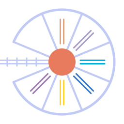

Roundhouse
Rails is the specification; deployment is a build flag.
Roundhouse ingests a Ruby on Rails application into a typed intermediate representation and emits equivalent projects in C#, Crystal, Elixir, Go, Kotlin, Python, Rust, Swift, and TypeScript — plus a Ruby round-trip that runs under CRuby, JRuby, or Spinel. The playground and IDE run against real apps you can switch between in-page: a Rails-guides "real blog", the Lobsters benchmark app, and — in the IDE — Mastodon.
The emitted projects compile clean and pass their tests. Correctness is a conformance oracle: the same URL fetched from Rails and from each target must produce the same response — enforced by emitted unit tests, a differential compare gate against live Rails, and end-to-end browser tests.
No annotations are involved: has_many :comments is a
type declaration, and whole-program inference recovers the types
Rails' conventions already imply. That inference is a product in its
own right — an LSP server, an MCP server, and the
in-browser IDE answer what's the type here,
can this be nil? on unannotated Rails apps, with no app boot
and no database: queries answer in milliseconds, and a whole-app
pass over Mastodon takes about two seconds, in a browser tab.
It's also the performance story: every decision that can't differ between requests is made once, at transpile time. The emitted Ruby serves ~10× the requests of stock Rails on the same CRuby+YJIT, ~74× under JRuby, and the compiled targets go further — ratios from a CPU-bound microbenchmark; caveats in the posts below.
- Conformance vs Comprehension — the project and its oracle
- Live Types for Rails — the inference as a live type checker
- An IDE You Don't Install — Mastodon analyzed in a browser tab
- The Ruby JRuby Was Built to Run — the 2×2 performance experiment
- Numbers Without Conclusions — benchmark methodology and honest caveats
Successor to railcar. Dual-licensed MIT / Apache-2.0.